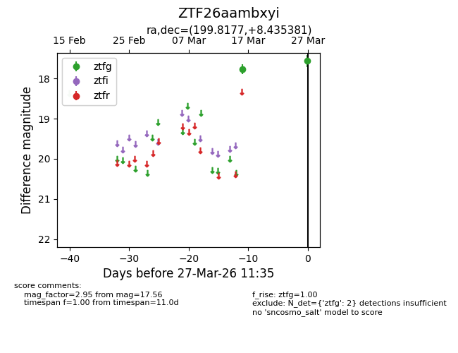
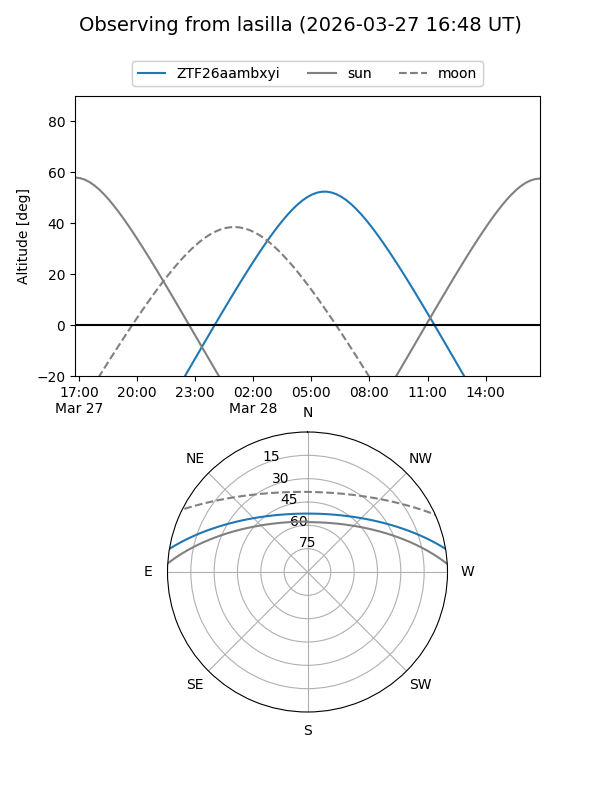
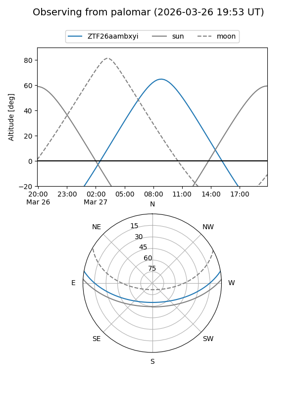

ZTF26aambxyi
Target ZTF26aambxyi at 2026-03-27 11:38
Aliases and brokers:
FINK: link
Lasair: link
ALeRCE: link
alt names
ZTF26aambxyi (ztf,fink_ztf)
Coordinates:
equatorial (ra, dec) = 199.8177,+8.43538
equatorial (HMS+DMS) = 13:19:16.25,+08:26:07.37
galactic (l, b) = (323.6296,+70.18061)
Flags:
Photometry:
last ztfg=17.56
2 ztfg detections
Lightcurve

Visibility


Additional plots